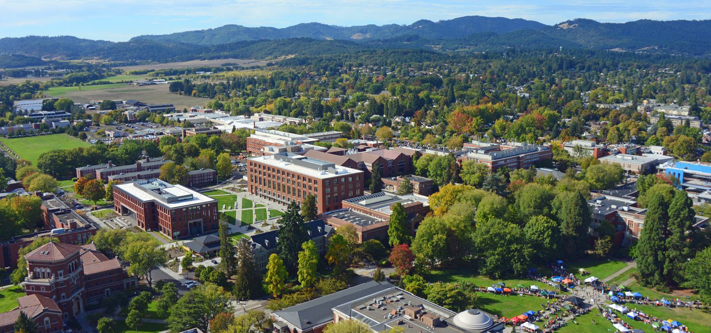

How COVID-19 Changed Our Lives
By: Hannah Maung, Gretel Rajamoney, Luke Bray, Zachary Smith
Dec 6, 2020
Aceing classes is a difficult enough task in itself. But performing well in the midst of a global pandemic? Now that is a totally different story. The shift from in-person classes to completely remote classes during COVID-19 has been exceptionally challenging for us all. Our team wanted to create this blog to share our personal experiences with online classes and remote learning at Oregon State University, as well as share some advice regarding how to succeed as a virtual student. Scroll down to the 'Meet the Team' section, where you can read all of our personal experiences. We would love to hear about your personal experiences as a students during COVID-19. To share your experiences and read the experiences of others please navigate to our 'Discussion' section.
Meet the Team

Hannah Maung Junior, Computer Science applied with Business
I remember getting sent home from OSU right when the COVID-19 news came out like it was just yesterday. I remember all my friends and I had barely any idea what was happening, but we all said goodbye and planned to see each other back at school in a couple weeks. Little did we know, we wouldn’t come back to school until six months later. My whole sophomore year spring term was all online. I had to attend all my lectures on zoom and do all my homework in a place where I wasn’t used to doing it at- my house back in my hometown. I personally struggled a lot with this because there were so many extra distractions at my house. I had a solid routine at school and had so many different resources and places to go to study. All of that was stripped away from me in seconds. It was really difficult for me to stay encouraged and maintain my motivation to learn during a global pandemic. Life seemed so surreal at that time, and it still does. It’s been really difficult to accept that remote learning and the way life is going right now is going to be the new norm for a while.
Gretel Rajamoney
Junior, Computer Science applied with Data Science

Looking back to the finale of winter term when COVID-19 had began to take affect on all of our lives, seems like just a few short weeks ago. When in reality, it has been a shocking 9 months since were packing our bags ready to leave campus. I remember packing a small suitcase planning to head to my home in Atlanta for spring break, unfortunately news that students would not be returning to campus was released two days after I had arrived at home. I had to leave all of my belongings and nearly all of my close friends back in Oregon, and face the struggles of online learning all alone on the other side of the country. Adjusting to this drastic change was an obstacle like no other, it took me nearly all of spring term to put together a solid studying routine. And even with this routine, I struggled to set aside my personal life, stay motivated to perform well, achieve good grades, or even maintain a proper work-ethic. Although I can finally say that I have adjusted to online learning, it still seems absurd to believe that this is really my life as a student in a pandemic.
Luke Bray
Junior, Computer Science applied with Business

When looking back at winter term of 2019, students at OSU had no idea what was going on regarding COVID-19. My roomates and I decided that we were moving home for the remained of the school year just to be safe. Transitioning to online school back at home was definitely very hard for me during spring term of 2019, it was nice to be home and see all of my friends but it was difficult to get back into the school mindset and keeping up with my classes. At this point, I've gotten very used to the circumstances of online school but I hope we can soon make our way back onto campus!
Zachary Smith Sophomore, Computer Science applied with Artificial Intelligence
When my friends and I first found out that we were going to be doing two weeks online for the spring term we were all really excited to pretty much get an extended spring break. When the news hit that we wouldn't be coming back at all for the spring term, I was really bummed out because as a freshman I was really excited to experience all the things that the spring term had in store. I got accustomed to do school online pretty quickly and for Computer Science classes I found online classes to be a better option then in person classes because I could axtually see the code and examples. I do miss being able to meet new people in classes as online classes create a pretty difficult environment to actually meet new people.
Our Advice: How to Succeed in Online Classes During COVID-19
- BULLET #1
- BULLET #2
- BULLET #3
- BULLET #4
- BULLET #5
- BULLET #6
- BULLET #7
- BULLET #8
Discussion
This is where we make a discussion thing